The budding artist
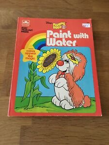"I was born to do this" is a familiar phrase you hear people say. It equals passion, drive and willingness to excel at whatever that is to that person. As a child, I loved drawing, coloring, painting with watercolors, etc. I really enjoyed the Paint with Water books. My coloring books and 64ct. crayolas were my most prized possessions. Each page that was colored was done with the most consideration.
Skill discovery
In the 80's, cartoons were EVERYTHING. Every Saturday morning, kids were glued to the T.V. watching their favorite programs. I certainly was no different. Disney films were being re-released in theatres from "The Vault" and were a bonding experience for my mother and I. The magic of Disney sparked my interest in animation. The process of it all was intriguing of how many drawings, the work that is put in to make 5 minutes. It was then that I started practicing drawing my favorite character, Garfield the cat. I would spend hours drawing him to perfect him standing, sleeping, etc. Eventually, I was able to draw him without looking. My mother's awe of being so impressed encouraged me.
Bring it on
 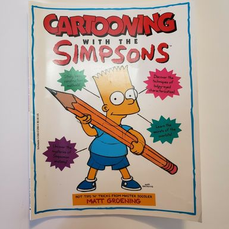
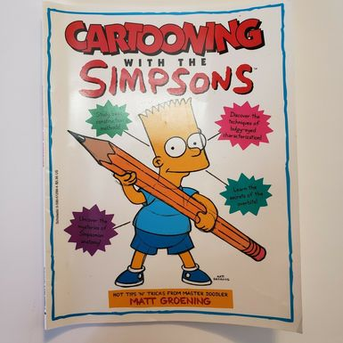
Once I mastered Garfield, there was no looking back. I would start copying charachters from my coloring books, practicing until I got them perfect. Drawing came very easily to me. This discovery of this new world I was good in sparked curiosity for any kind of art to explore. At 8 years old I found ceramics. I loved the process of it also. While having another creative outlet, I continued to enhance my drawing skills by ordering How To Draw books from school. I would add to my collection each time. I truly loved learning about how to do new things in art.
Developing as an Artist
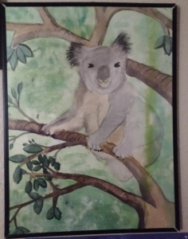 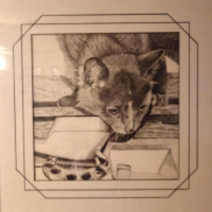Taking as many class electives in art was my determination to learn to new skills. I appreciated being mentored by my instructors once they realized my passion and ability. In high school, I had more options in art classes. Mediums such as sculpture, jewelry making, drawing, painting were added to my repertoire. In my junior year, I was introduced to visual (computer) art. Not so sure about this new form of art, I dove in and decided it wasn't so bad. As a senior, I started my technical education in Commercial Art. By the end of my Senior year in high school, I had won the Wyandotte County Art Association Artist of the Year for an intricate ink drawing I had done. Also, my high school had bought a colored pencil piece of flowers to permanently display for a whopping $25. I was super proud.
Continuing my Education
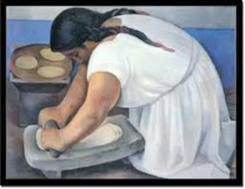 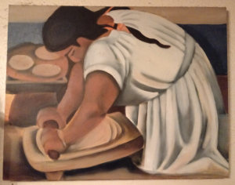After graduating high school, I continued my Commercial Art education at the technical school. I learned more software including Adobe Illustrator & Photoshop. Photography, Typography, and marketing were included also. Completing the course would gaurantee me 30 college credits towards an Associates Degree at KCKCC. I was awarded a scholarship to KCKCC for an Associates Degree. My favorite painting I did in school was a recreation of a Diego Rivera painting entitled, "Woman Grinding Maize". I eventually recieved my Associates Degree. At that time I was the first in my family to complete a degree in college.
Working as an Artist
It took a few years to get the chance to show off my skills. I eventually landed a job as a graphic artist at a small screenprinting business willing to take a chance on one with no work experience in this field. I was the lone artist and loved it. I was finally able to apply what I had learned at the technical school. It was great. I was able to hone my Illustrator skills designing art for tshirts. I have had the opportunity to work for businesses, churches, schools, family reunions, and also the KC Chiefs and Chiefs Cheerleaders. Building relationships with clients over the years and for them to be able to say "I trust you" with their projects has been amazing.
What's next?
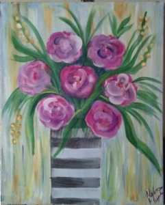 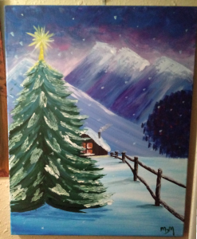 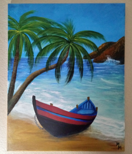In the past year and a half, I have rediscovered my skills and creativity. Over the years of course I have indulged in some form of crafts/projects, but I was missing something. After finally going to a Sip and Paint event, I dusted off my painting skills. It was so fun. After that, I decided, I'm going to paint at home. So I started looking on Pinterest and found endless pins of DIY Canvas Paintings as inspiration. So now, I save the ones I would like to do and when I can, I create a version of them. It is relaxing and fun for me. I even get together with family to have a painting session. I love encouraging others to get in touch with their creative side and get painting! I tell everyone, "Anyone can paint, you don't have to be Picasso.". Now my closest relative, who never thought she could paint, takes on projects of her own!
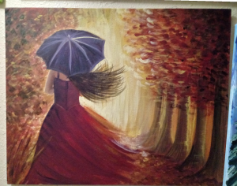 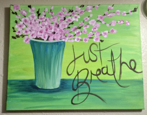 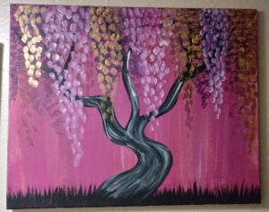After rediscovering my happy place, I thought, "I need to find another creative outlet. I have so much more to accomplish creatively. What possibly could I do?" Then, I re-discovered web development. I had taken an Intro to HTML class in college and enjoyed it. It happened to be one of the last electives I needed to complete my degree. After that, I hadn't thought about it much. So now, it is my mission to build my skills and become a successful web developer. It is a challenge for sure, but nothing is impossible. When inspired I paint motivational pieces to look at and keep me motivated.
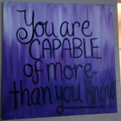 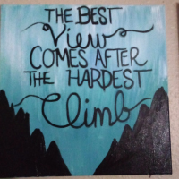 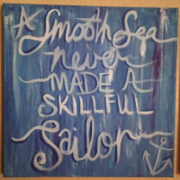 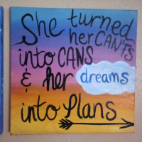